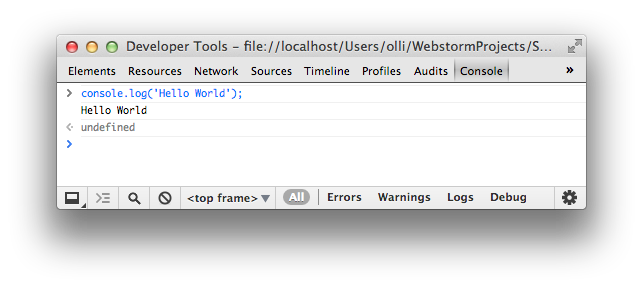

Einführung in JavaScript für Java-Entwickler
Oliver Zeigermann / http://zeigermann.eu
Oliver Ochs TODO
Oliver Ochs TODO
Oliver Zeigermann

Hello World
Hello World #1
<!DOCTYPE html>
<html>
<head>
<title>Hello World!</title>
<script>
alert("Hello World");
</script>
</head>
<body>
</body>
</html>
Hello World #2
<!DOCTYPE html>
<html>
<head>
<title>Hello World!</title>
</head>
<body>
<div id="log"></div>
<script>
var element = document.getElementById("log");
element.innerHTML = "<h1>Hello World</h1>";
</script>
</body>
</html>
Hello World #3
node -e "console.log('Hello World');"
Hello World #4
Object
var map = {
feld1: 'Huhu',
zweites$Feld: "Auch sowas geht!"
};
console.log(typeof map === "object"); // true
console.log(map.feld1); // Huhu
console.log(map["zweites$Feld"]); // Auch sowas geht!
map.hund = "Ganz neu geht auch";
map.f = function() { return "Aha!" };
delete map.hund; // löschen
console.log(map.hund); // undefinedArray
var array = ["a", "b", "c"];
var el = array[2];
array[1] = 20;
typeof array === "object";
// fügt die 4 am Ende hinzu
array.push(4);
// An Position 1 werden 2 Elemente entfernt und zurück gegeben
array.splice(1, 2);
// An Position 1 werden 0 Elemente entfernt und zurück gegeben
// Zudem wird an Position 1 "x" hinzugefügt
array.splice(1, 0, "x");
Typen
var string = "String";
typeof string === "string";
var int = 1;
typeof int === "number";
var float = 1.0;
typeof float === "number";
var bool = true;
typeof bool === "boolean";
var func = function() {};
typeof func === "function";
typeof michGibtEsNicht === "undefined";Kontrollstrukturen
for
for (var i=0; i < array.length; i++) {
console.log(i + ": " + array[i]);
}
// Durch alle Feld-Namen iterieren
// Geht für Map / Object und für Array!
for (var i in map) {
console.log(i + ": " + map[i]);
}
Kontrollstrukturen ansonsten wie in Java / C#
- if / else
- while / do
- switch
- break / continue
- Referenz
Funktionen
function f2() {
console.log("Called!");
}
var result2 = f2();
result2 === undefined;
var f1 = function(p1, p2) {
return p1 + p2;
};
var result1 = f1(1,2);
result1 === 3;
Optionale Parameter
function f1(p1) {
if (typeof p1 === 'undefined') {
return null;
} else {
return p1;
}
}
var result1 = f1(1);
console.log(result1 === 1);
var result2 = f1();
console.log(result2 === null);Varargs #1
function f2() {
// "arguments" enthält immer alle Argumente der Funktion
if (typeof arguments[0] === 'undefined') {
return null;
} else {
return arguments[0];
}
}
var result3 = f2(1);
console.log(result3 === 1);
var result4 = f2();
console.log(result4 === null);Varargs #2
function summe() {
var sum = 0;
for (var a in arguments) {
sum += arguments[a];
}
return sum;
}
var result5 = summe(1,2,3);
console.log(result5 === 6);Scopes
So nicht!
{
var huch = "Ich bin noch da";
}
console.log(huch); // Ich bin noch da
So!
(function () {
var achso = "Ich bin weg";
}());
console.log(achso); // ReferenceError
Exception Handling
try {
throw "Error";
// or
throw new Error("Error");
} catch (e) {
console.log("Caught: " + e)
} finally {
console.log("Always")
}
Übung: Basiswissen
- Erzeuge ein Array mit Personen-Objekten mit mindestens den Eigenschaften
- Name
- Alter
- Geschlecht
- Gib alle Personen nacheinander aus
- Erstelle eine Funktion, die eine Person formatiert auf der Console ausgibt
Objekte, die Zweite
- Objekte können auch Funktionen als Properties haben
- Diese funktionieren dann wie Methoden, d.h.
thisist an das Objekt gebunden über das sie aufgerufen werden var obj = { field: 10, log: function() { console.log(this.field); } }; obj.log(); // 10
Singleton
- Wie gesehen, kann man in JavaScript Objekte auch ohne einen Typ erzeugen
- In klassenbasierten Sprachen muss man auch dafür einen Typ erzeugen und darauf achten, dass man nur eine Instanz erzeugen kann
- Das Pattern dazu heißt
Singleton - In JavaScript braucht man dieses Pattern nicht
- Manchmal möchte man allerdings auch mehrere Objekte mit dergleichen oder ähnlichen Struktur erzeugen
Klassische Typen und Vererbung mit JavaScript
- Typen und Konstruktoren sind Mechanismen, um mehrere, strukturell gleiche oder ähnliche Objekte zu erzeugen
- Auch in JavaScript können eigene Typen definiert werden
- Einfachvererbung ist ebenso möglich
- Der Mechanismus ist nicht direkt in die Sprache eingebaut
- Stattdessen benutzen wir Best-Practice-Patterns
- Grundlage ist die prototypische Vererbung
Prototypen
- Jedes Objekt zusätzlich hat eine Referenz auf seinen Prototyp
Object.getPrototypeOf()in neueren Browsern
Objecthat keinen Prototypen, ist aber Prototyp aller anderen Objekte- Lesende Property-Zugriffe können transitiv an Prototypen delegiert werden
- Dies heißt prototypische Vererbung
Setzen des Prototypen aka das Typen-System
Der Prototyp kann nicht direkt, aber durch Aufruf von new gesetzt werden
/** @constructor */
function Person(name) {
this.name = name;
}
Person.prototype.getName = function() {
return this.name;
};
var olli = new Person('Olli');
olli.getName() === 'Olli';
olli instanceof Object;
olli instanceof Person;
Ablauf eines Konstruktoraufrufs mit new
- ein leeres, neues Objekt wird erzeugt
- die Konstruktor-Funktion hat ein Property
prototype, dies wird als Prototyp des neuen Objekts verwendet thiswird an dieses neue Objekte gebunden- die Konstruktor-Funktion wird aufgerufen (mit
thisgebunden) - das neue Objekt wird implizit zurückgegeben (wenn die Funktion kein explizites
returnhat)
Vererbung
- Typen-Hierarchien und Instanzen nutzen beide Prototypische Vererbung
- Typen-Hierarchien werden einmal aufgebaut und als Prototypen der Instanzen verwendet
- Typen-Hierarchien werden ebenso über Prototypen erstellt
- Aufruf von Super-Konstruktoren und Super-Methoden über call / apply
Vererbung #1
function Person(name, gender) {
this.name = name;
this.gender = gender;
}
Person.prototype.getName = function() {
return this.name;
};
function Male(name) {
Person.call(this, name, "Male"); // super call
}
Male.prototype = new Person();Vererbung #2
Male.prototype.getName = function() {
// super call
return "Mr " + Person.prototype.getName.call(this);
};
var olli = new Male('Olli');
olli.getName() === 'Mr Olli';
olli.gender === 'Male';
olli instanceof Male;
olli instanceof Person;
olli instanceof Object;Konstruktur ohne störende Seiteneffekte
Das Prototype-Property der Konstruktor-Funktion dient als Vorlage für die Vererbungskette
function _extends(_sub, _super) {
var IntermediateConstructor = function () {};
IntermediateConstructor.prototype = _super.prototype;
_sub.prototype = new IntermediateConstructor();
_sub.prototype.constructor = _sub;
} Static
// Statisches Feld
Person.lieblingsName = "Olli";
// Statische Funktion, greift nicht auf this zu
Person.getLieblingsName = function() {
return Person.lieblingsName;
};
Person.lieblingsName === "Olli";
Person.getLieblingsName() === "Olli";Übung: Typen
- Schreibe einen Typen für Person
- Lasse im Konstruktor die drei bekannten Parameter für
name,alterundgeschlechtzu - Mache aus allen Funktionen, die auf Personen arbeiten, Methoden
- Lasse im Konstruktor die drei bekannten Parameter für
- Erzeuge ein Objekt vom Typ Person und rufe Methoden darauf auf
Optionaler Zusatzübung: Vererbung
- Schreibe den Typen Customer
- Customer soll von Person erben
- Berechne im Konstruktor aus den Parametern zumindest ein zusätzliches Feld, das den vermuteten bevorzugten Kaufgegenstand angibt
- Rufe aus dem Customer-Konstruktor den Person-Konstruktor auf
- Überschreibe die Methode
getName - Füge die Methode
shophinzu, die den bevorzugten Gegenstand ausgibt
- Erzeuge mindestens ein Objekt vom Typ Customer und rufe Methoden darauf auf
Module
Module in JavaScript werden über Closures realisiert
Closure in einem Satz
Eine innere Funktion hat immer Zugriff auf alle Variablen und Parameter ihrer äußeren Funktion, auch wenn diese äußere Funktion bereits beendet ist.
Frei nach Douglas Crockford
Beispiel Closure
function outer() {
var used = "Olli";
var unused = "Weg";
return (function() {
return "Text: " + used;
});
}
var inner = outer();
console.log(inner());Closure Definition
Eine Closure ist eine spezielle Art von Objekt, welche zwei Dinge kombiniert
- Eine Funktion
- die Umgebung in welcher diese Funktion erzeugt wurde - diese Umgebung besteht aus allen lokalen Variablen und Parametern, die sichtbar waren als die Closure erzeugt wurde
Revealing Module Pattern
var humanresources = {};
(function () {
function InternalStuff() {
}
function Person(name) {
this.name = name;
// uses internal stuff
}
humanresources.Person = Person;
})();
Sichtbarkeit bei Revealing Module Pattern
var olli = new humanresources.Person('Olli');
olli.name === 'Olli';
// TypeError: undefined is not a function
new humanresources.InternalStuff();Namespaces
var eu = eu || {};
eu.zeigermann = {};
eu.zeigermann.person = {};
(function (person) {
// Constructor
function Person(name) {
this.name = name;
}
// Factory
function create(name) {
return new Person(name);
}
// Export der Factory-Methode
person.createPerson = create;
})(eu.zeigermann.person);
Import
eu.zeigermann.main = {};
(function (main, person) {
function run() {
var olli = person.createPerson("Olli");
console.log(olli.name); // => "Olli"
console.log(person.Person); // => undefined
}
main.run = run;
})(eu.zeigermann.main, eu.zeigermann.person);
eu.zeigermann.main.run();Übung: Module
- Schreibe ein Modul, in das du die vorhandenen Typendefinitionen verschiebst. Dieses Modul soll
- nach außen nur den
Customer-Typen exportieren
- nach außen nur den
- Schreibe den aufrufenden Code so um, dass er mit den neuen Modulen arbeitet